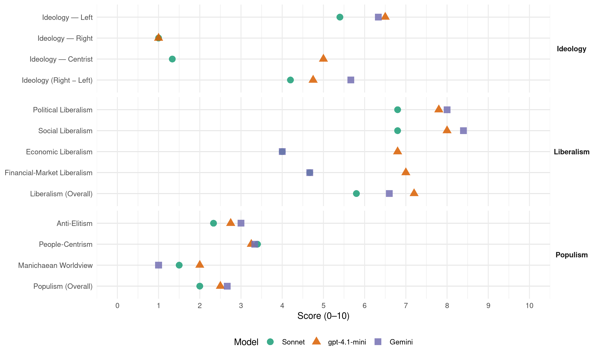

SP (Belgium, 1991)
manifesto_id 21321_199111
Get full text: This site shows derived annotations and short verbatim quotes only. The full manifesto text is © Manifesto Project / WZB — obtain it via manifesto-project.wzb.eu using the manifesto_id above.
Headline scores
| Dimension | Sonnet | gpt-4.1-mini | Gemini |
|---|---|---|---|
| Populism (Overall) | 2.0 | 2.5 | 2.7 |
| Anti-Elitism | 2.3 | 2.8 | 3.0 |
| People-Centrism | 3.4 | 3.2 | 3.3 |
| Manichaean Worldview | 1.5 | 2.0 | 1.0 |
| Ideology (Right − Left) | 4.2 | 4.8 | 5.7 |
| Liberalism (Overall) | 5.8 | 7.2 | 6.6 |
| Political Liberalism | 6.8 | 7.8 | 8.0 |
| Social Liberalism | 6.8 | 8.0 | 8.4 |
| Economic Liberalism | 4.0 | 6.8 | 4.0 |
| Financial-Market Liberalism | 4.7 | 7.0 | 4.7 |
Evidence per dimension
Economic Liberalism
Gemini · score 4.0 · verified · chunk 1
“ingrijpen in de prijzen een belangrijk wapen”
de SP de mogelijkheid om ingrijpen in de prijzen een belangrijk wapen in de strijd
Gemini · score 4.0 · verified · chunk 2
“duidelijke krijtlijnen trekt waarbinnen de ondernemingen en de markt”
die zelf de problemen aanpakt, die duidelijke krijtlijnen trekt waarbinnen de ondernemingen en de markt kunnen opereren
Gemini · score 4.0 · verified · chunk 3
“ecotaxen, statiegelden, groene expansiesteun”
alle instrumenten van het milieubeleid optimaal in te zetten: normen, heffingen, ecotaxen, statiegelden, groene expansiesteun en productaansprakelijkheid
Gemini · score 5.0 · mixed · chunk 4
“een beperking van de beslissingsmacht”
dit zal onvermijdelijk een beperking van de beslissingsmacht van de ondernemingen betekenen.
Gemini · score 4.0 · verified · chunk 5
“concurrentievermogen van onze ondernemingen”
Dit maakt dat het concurrentievermogen van onze ondernemingen een belangrijk gegeven is.
gpt-4.1-mini · score 6.0 · verified · chunk 1
“mededingingsbeleid - dat moet vermijden dat verkopers misbruik maken”
Samen met een mededingingsbeleid - dat moet vermijden dat verkopers misbruik maken van hun machtspositie - blijft voor de SP de mogelijkheid om in te grijpen in de prijzen een belangrijk wapen in de strijd tegen de inflatie.
gpt-4.1-mini · score 7.0 · verified · chunk 2
“De ecologische modernisering en reconversie van de economie moet dan ook in alle sectoren en ondernemingen op gang gebracht worden”
De ecologische modernisering en reconversie van de economie moet dan ook in alle sectoren en ondernemingen op gang gebracht worden. De mens- en milieuvriendelijke ondernemingen verdienen ongetwijfeld een extra steuntje omdat ze als voorbeeld kunnen dienen hoe het kin, maar voor de rest hebben we geen speciale voorkeur voor grote of kleine ondernemingen.
gpt-4.1-mini · score 7.0 · verified · chunk 3
“normen, heffingen, ecotaxen, statiegelden, groene expansiesteun en productaansprakelijkheid”
Voor de rest komt het erop aan alle instrumenten van het milieubeleid optimaal in te zetten: normen, heffingen, ecotaxen, statiegelden, groene expansiesteun en productaansprakelijkheid horen allemaal zonder vooringenomenheid in dat rijtje thuis.
gpt-4.1-mini · score 7.0 · verified · chunk 4
“de Vlaamse economie is een typische KMO economie”
De Vlaamse economie is een typische KMO economie. Zowat 72% van de Vlaamse bedrijven stellen minder dan 5 werknemers te werk. De ondernemingen niet maximum 50 werknemers realiseren ruim 40% van de tewerkstelling.
gpt-4.1-mini · score 7.0 · verified · chunk 5
“De Belgische economie is sterk afhankelijk van de export”
EXPORTEREN IS CONCURREREN. De Belgische economie is sterk afhankelijk van de export. Dit maakt dat het concurrentievermogen van onze ondernemingen een belangrijk gegeven is.
Sonnet · score 5.0 · mixed · chunk 1
“mededingingsbeleid”
Samen met een mededingingsbeleid - dat moet vermijden dat verkopers misbruik maken van hun machtspositie - blijft voor de SP de mogelijkheid om in te grijpen in de prijzen
Sonnet · score 4.0 · verified · chunk 2
“krijtlijnen trekt waarbinnen de ondernemingen en de markt kunnen opereren”
die duidelijke krijtlijnen trekt waarbinnen de ondernemingen en de markt kunnen opereren, die de bedrijven en de bevolking kan sensibiliseren
Sonnet · score 5.0 · mixed · chunk 3
“herziening van de fiscaliteit inzake accijnzen”
de SP voorstander van een herziening van de fiscaliteit inzake accijnzen en BTW. Door milieuvriendelijke
Sonnet · score 5.0 · mixed · chunk 4
“commercialisering en privatisering tegen te gaan”
efficiënte maatregelen nemen om de nefaste ontwikkelingen in de sport zoals geweld, doping, commerciële misbruiken en de steeds verder oprukkende commercialisering en privatisering tegen te gaan.
Sonnet · score 4.0 · verified · chunk 5
“dreigt meer en meer een liberaal project te worden”
Dit Europa dreigt meer en meer een liberaal project te worden dat niet veel verder reikt dan de organisatie van een eengemaakte markt. Het sociaal en fiscaal Europa dreigt steeds meer achterop te raken
Financial-Market Liberalism
Gemini · score 3.0 · verified · chunk 2
“relatie tussen jongeren en het kredietwezen”
Bijzondere. aandacht moet besteed worden aan de relatie tussen jongeren en het kredietwezen. Blijkbaar zijn ze een nieuw jachtterrein
Gemini · score 6.0 · verified · chunk 4
“solvabiliteit van de financiële instellingen”
Daarom moet de solvabiliteit van de financiële instellingen gewaarborgd worden. Ook is er
Gemini · score 5.0 · verified · chunk 5
“solvabiliteit van de financiële instellingen gewaarborgd”
Daarom moet de solvabiliteit van de financiële instellingen gewaarborgd worden. Ook is er een adequate controle nodig op de financiële tussenpersonen en de financiële markten.
gpt-4.1-mini · score 7.0 · verified · chunk 4
“De overheid moet de gebruiker van financiële diensten goed beschermen”
De overheid moet de gebruiker van financiële diensten goed beschermen. Daarom moet de solvabiliteit van de financiële instellingen gewaarborgd worden. Ook is er een adequate controle nodig op de financiële tussenpersonen en de financiële markten.
gpt-4.1-mini · score 7.0 · verified · chunk 5
“De overheid moet de gebruiker van financiële diensten goed beschermen”
De overheid moet de gebruiker van financiële diensten goed beschermen. Daarom moet de solvabiliteit van de financiële instellingen gewaarborgd worden. Ook is er een adequate controle nodig op de financiële tussenpersonen en de financiële markten.
Sonnet · score 4.0 · verified · chunk 1
“patronale premies voor privé-verzekeringen voor pensioenen”
Ook de patronale premies voor privé-verzekeringen voor pensioenen en geneeskundige verzorging moeten beschouwd worden als loon en onderworpen worden aan de volledige bijdrageplicht.
Sonnet · score 5.0 · verified · chunk 2
“kredietverstrekking”
Om misbruiken en uitwassen te voorkomen moet worden gedacht aan het reglementeren van publiciteit naar de minderjarigen en het controleren van de kredietverstrekking.
Sonnet · score 5.0 · verified · chunk 3
“fonds voor goedkope leningen voor investeringen”
Via deze stichting kan een fonds gecreëerd worden voor goedkope leningen voor investeringen in literair werk
Sonnet · score 6.0 · mixed · chunk 4
“solvabiliteit van de financiële instellingen gewaarborgd worden”
Daarom moet de solvabiliteit van de financiële instellingen gewaarborgd worden. Ook is er een adequate controle nodig op de financiële tussenpersonen en de financiële markten.
Sonnet · score 5.0 · mixed · chunk 5
“deregulering van de financiële sector heeft aanleiding gegeven”
De deregulering van de financiële sector heeft aanleiding gegeven tot een boom van financiële instrumenten. Dit opende nieuwe mogelijkheden voor de gebruikers. Maar toch zijn er ook gevaren aan verbonden.
Political Liberalism
Gemini · score 8.0 · verified · chunk 1
“opgenomen worden in de grondwet”
samenleving mag opeisen, moeten opgenomen worden in de grondwet. Het betreft het
Gemini · score 8.0 · verified · chunk 2
“exclusieve bevoegdheid van het parlement”
dan blijft dit voor de SP in elk geval de exclusieve bevoegdheid van het parlement. Reglementering kan noch door dit comité
Gemini · score 8.0 · verified · chunk 3
“inspraak en openbaarheid van bestuur”
en last but not least inspraak en openbaarheid van bestuur op alle niveaus te garanderen.
Gemini · score 8.0 · verified · chunk 4
“openbaarheid van bestuur”
is het hoogtijd de openbaarheid van bestuur op een veralgemeende en afdwingbare
Gemini · score 8.0 · verified · chunk 5
“democratisch door de Europese bevolking verkozen orgaan”
het Europees Parlement moet de klassieke wetgevende, budgettaire en controlerende parlementaire taken vervullen als democratisch door de Europese bevolking verkozen orgaan.
gpt-4.1-mini · score 8.0 · verified · chunk 1
“De rechten van het individu op zijn fysieke en morele integriteit”
De rechten van het individu op zijn fysieke en morele integriteit en op de menswaardige plaats die hij in de samenleving mag opeisen, moeten opgenomen worden in de grondwet.
gpt-4.1-mini · score 8.0 · verified · chunk 2
“de minister van Justitie draagt de politieke verantwoordelijkheid voor het vaststellen van de algemene oriëntatie”
De minister van Justitie draagt de politieke verantwoordelijkheid voor het vaststellen van de algemene oriëntatie en van de prioriteiten van dit beleid. Hij moet het strafrechtelijk beleid bepalen in overleg met de procureurs generaal. De beleidsrichtlijnen voor de opsporing en vervolging moeten door de parketten gevolgd worden, zodat over het hele land een eenvormig opsporings- en vervolgingsbeleid kan worden toegepast.
gpt-4.1-mini · score 7.0 · verified · chunk 3
“open en soepele milieuplanning vraagt een goed juridisch kader dat de politieke- verantwoordelijkheden duidelijk vastlegt”
Een open en soepele milieuplanning vraagt een goed juridisch kader dat de politieke- verantwoordelijkheden duidelijk vastlegt, de inspraak en openbaarheid van de gegevens regelt en de continuïteit waarborgt. Voor de gemeenten en provincies, voor de bevolking zelf en voor de milieuorganisaties is daarbij een belangrijke rol weggelegd.
gpt-4.1-mini · score 8.0 · verified · chunk 4
“openbaarheid van bestuur op een veralgemeende en afdwingbare wijze in te voeren”
Om de verstoorde relatie tussen burger en overheid te herstellen is het hoogtijd de openbaarheid van bestuur op een veralgemeende en afdwingbare wijze in te voeren. Zo kunnen de sfeer van geheimhouding die veel administraties kenmerkt en het wantrouwen van de burger doorbroken worden.
gpt-4.1-mini · score 8.0 · verified · chunk 5
“het Europees Parlement moet de klassieke wetgevende, budgettaire en controlerende parlementaire taken vervullen”
Als rechtstreeks verkozen volksvertegenwoordiging moet het Europees -Parlement op gelijke voet met de Raad de wetgevende bevoegdheid uitoefenen. De invoering van het “medebeslissingsrecht” tussen de Raad en het Parlement, is hiertoe een eerste stap.
Sonnet · score 6.0 · verified · chunk 1
“rechten van het individu op zijn fysieke en morele integriteit”
De rechten van het individu op zijn fysieke en morele integriteit en op de menswaardige plaats die hij in de samenleving mag opeisen, moeten opgenomen worden in de grondwet.
Sonnet · score 7.0 · verified · chunk 2
“democratische wijze verlopen”
De besluitvorming m.b.t. deze problemen moet op een maximaal doorzichtige en democratische wijze verlopen gezien er fundamenteel ethische opties genomen worden.
Sonnet · score 7.0 · verified · chunk 3
“inspraak en openbaarheid van bestuur”
last but not least inspraak en openbaarheid van bestuur op alle niveaus te garanderen.
Sonnet · score 8.0 · verified · chunk 4
“openbaarheid van bestuur op een veralgemeende en afdwingbare wijze”
Om de verstoorde relatie tussen burger en overheid te herstellen is het hoogtijd de openbaarheid van bestuur op een veralgemeende en afdwingbare wijze in te voeren.
Sonnet · score 6.0 · verified · chunk 5
“democratische en federale Europese Unie”
In haar streven naar een democratische en federale Europese Unie wenst de SP twee fundamentele klemtonen te leggen.
Liberalism (Overall)
Gemini · score 7.0 · verified · chunk 1
“rechten van het individu op zijn fysieke”
De rechten van het individu op zijn fysieke en morele integriteit en
Gemini · score 6.0 · verified · chunk 2
“exclusieve bevoegdheid van het parlement”
dan blijft dit voor de SP in elk geval de exclusieve bevoegdheid van het parlement. Reglementering kan noch door dit comité
Gemini · score 7.0 · verified · chunk 3
“inspraak en openbaarheid van bestuur”
en last but not least inspraak en openbaarheid van bestuur op alle niveaus te garanderen.
Gemini · score 7.0 · verified · chunk 4
“openbaarheid van bestuur”
is het hoogtijd de openbaarheid van bestuur op een veralgemeende en afdwingbare
Gemini · score 6.0 · verified · chunk 5
“democratisch door de Europese bevolking verkozen orgaan”
het Europees Parlement moet de klassieke wetgevende, budgettaire en controlerende parlementaire taken vervullen als democratisch door de Europese bevolking verkozen orgaan.
gpt-4.1-mini · score 6.0 · verified · chunk 1
“mededingingsbeleid - dat moet vermijden dat verkopers misbruik maken”
Samen met een mededingingsbeleid - dat moet vermijden dat verkopers misbruik maken van hun machtspositie - blijft voor de SP de mogelijkheid om in te grijpen in de prijzen een belangrijk wapen in de strijd tegen de inflatie.
gpt-4.1-mini · score 8.0 · verified · chunk 2
“De minister van Justitie draagt de politieke verantwoordelijkheid voor het vaststellen van de algemene oriëntatie”
De minister van Justitie draagt de politieke verantwoordelijkheid voor het vaststellen van de algemene oriëntatie en van de prioriteiten van dit beleid. Hij moet het strafrechtelijk beleid bepalen in overleg met de procureurs generaal. De beleidsrichtlijnen voor de opsporing en vervolging moeten door de parketten gevolgd worden, zodat over het hele land een eenvormig opsporings- en vervolgingsbeleid kan worden toegepast.
gpt-4.1-mini · score 7.0 · verified · chunk 3
“open en soepele milieuplanning vraagt een goed juridisch kader dat de politieke- verantwoordelijkheden duidelijk vastlegt”
Een open en soepele milieuplanning vraagt een goed juridisch kader dat de politieke- verantwoordelijkheden duidelijk vastlegt, de inspraak en openbaarheid van de gegevens regelt en de continuïteit waarborgt. Voor de gemeenten en provincies, voor de bevolking zelf en voor de milieuorganisaties is daarbij een belangrijke rol weggelegd.
gpt-4.1-mini · score 7.0 · verified · chunk 4
“De overheid moet de gebruiker van financiële diensten goed beschermen”
De overheid moet de gebruiker van financiële diensten goed beschermen. Daarom moet de solvabiliteit van de financiële instellingen gewaarborgd worden. Ook is er een adequate controle nodig op de financiële tussenpersonen en de financiële markten.
gpt-4.1-mini · score 8.0 · verified · chunk 5
“De overheid moet de gebruiker van financiële diensten goed beschermen”
De overheid moet de gebruiker van financiële diensten goed beschermen. Daarom moet de solvabiliteit van de financiële instellingen gewaarborgd worden. Ook is er een adequate controle nodig op de financiële tussenpersonen en de financiële markten.
Sonnet · score 5.0 · verified · chunk 1
“discriminaties op de arbeidsmarkt op grond van leeftijd”
een bescherming uit te werken tegen discriminaties op de arbeidsmarkt op grond van leeftijd.
Sonnet · score 6.0 · verified · chunk 2
“elke vorm van discriminatie op basis van geslacht”
een algemene antidiscriminatiewet uit te vaardigen die elke vorm van discriminatie op basis van geslacht, leeftijd, ras, huidskleur, afkomst, nationaliteit of etnische afstamming, handicap, politieke, ideologische of levensbeschouwelijke visie, sexuele geaardheid, enz. verbiedt
Sonnet · score 6.0 · verified · chunk 3
“inspraak en openbaarheid van bestuur”
last but not least inspraak en openbaarheid van bestuur op alle niveaus te garanderen.
Sonnet · score 7.0 · verified · chunk 4
“openbaarheid van bestuur op een veralgemeende en afdwingbare wijze”
Om de verstoorde relatie tussen burger en overheid te herstellen is het hoogtijd de openbaarheid van bestuur op een veralgemeende en afdwingbare wijze in te voeren.
Sonnet · score 5.0 · verified · chunk 5
“Het parallellisme tussen het economisch Europa en het sociaal”
Het parallellisme tussen het economisch Europa en het sociaal en fiscaal Europa moet hersteld worden. Op deze twee domeinen is een belangrijke inhaalbeweging noodzakelijk.
Anti-Elitism
Gemini · score 3.0 · verified · chunk 1
“zonder voortdurende bemoeienissen van de regering”
vakbonden en werkgevers, ook zonder voortdurende bemoeienissen van de regering, goede resultaten
Gemini · score 3.0 · verified · chunk 2
“ongelijke machtsverdeling, tot afleiding van de financiële middelen”
De verzuiling in de welzijnssector heeft een aantal negatieve effecten… De verzuiling leidt tot een ongelijke machtsverdeling, tot afleiding van de financiële middelen, en tot een slechte geografische spreiding
Gemini · score 3.0 · verified · chunk 4
“misbruiken via politieke patronage”
en, terwijl de negatieve politisering (misbruiken via politieke patronage) grotendeels wordt uitgeschakeld.
gpt-4.1-mini · score 3.0 · verified · chunk 1
“de strijd tegen de fiscale fraude”
Dit moeten we bereiken langs een betere werking van de administratie, een vereenvoudiging van de wetgeving en de strijd tegen de fiscale fraude. Het gaat niet op dat een doorsnee belastingbetaler meer moet betalen om de fraude en ontdoken belastingen te compenseren.
gpt-4.1-mini · score 2.0 · verified · chunk 2
“de belangen van de hulpverlenende instantie belangrijker worden dan de hulpvrager”
De overheid, en in het bijzonder de lokale overheid, moet erover waken dat de oversegmentering van de hulpverlening er niet toe leidt dat de belangen van de hulpverlenende instantie belangrijker worden dan de hulpvrager. Daarom moet de overheid overleg en coördinatie organiseren zodat de hulpverlening optimaal afgestemd wordt op de behoefte van de cliënt
gpt-4.1-mini · score 3.0 · verified · chunk 4
“de overheid onmachtig blijft, de verzuchting van de bevolking niet begrijpt”
Telkens is een belangrijk element van wrevel de vaststelling dat de overheid onmachtig blijft, de verzuchting van de bevolking niet begrijpt. Radicale democratie is dan ook geen programmapunt dat losstaat van de andere punten.
gpt-4.1-mini · score 3.0 · verified · chunk 5
“de grote bedrijven en de hoge inkomens kunnen wel gebruik maken van deze diensten”
De grote bedrijven en de hoge inkomens kunnen wel gebruik maken van deze diensten (de kosten zijn zelfs fiscaal aftrekbaar) met het gevolg dat voor bedrijven fiscale spitstechnologie dikwijls meer opbrengt dan economische spitstechnologie.
Sonnet · score 2.0 · verified · chunk 1
“misbruik maken van hun machtspositie”
een mededingingsbeleid - dat moet vermijden dat verkopers misbruik maken van hun machtspositie - blijft voor de SP de mogelijkheid om in te grijpen
Sonnet · score 2.0 · mixed · chunk 2
“gevestigde belangen”
De ecologische strijd zal even moeizaam zijn als de sociale strijd omdat hij ingaat tegen ingewortelde gewoontes en vooral tegen gevestigde belangen.
Sonnet · score 3.0 · mixed · chunk 3
“de grote vervuilers gepakt worden”
de kans dat de grote vervuilers gepakt worden is nog altijd heel klein. Een stevig handhavings-
Sonnet · score 2.0 · verified · chunk 4
“negatieve politisering (misbruiken via politieke patronage)”
de positieve politisering (samenwerking politici-ambtenarij) beter georganiseerd, terwijl de negatieve politisering (misbruiken via politieke patronage) grotendeels wordt uitgeschakeld.
Sonnet · score 3.0 · verified · chunk 5
“grote bedrijven en de hoge inkomens kunnen wel gebruik maken”
De grote bedrijven en de hoge inkomens kunnen wel gebruik maken van deze diensten (de kosten zijn zelfs fiscaal aftrekbaar) met het gevolg dat voor bedrijven fiscale spitstechnologie dikwijls meer opbrengt dan economische spitstechnologie.
Ideology — Centrist
gpt-4.1-mini · score 5.0 · verified · chunk 1
“de rechten van het individu op zijn fysieke en morele integriteit”
De rechten van het individu op zijn fysieke en morele integriteit en op de menswaardige plaats die hij in de samenleving mag opeisen, moeten opgenomen worden in de grondwet.
gpt-4.1-mini · score 5.0 · verified · chunk 2
“De overheid moet overleg en coördinatie organiseren zodat de hulpverlening optimaal afgestemd wordt”
De overheid, en in het bijzonder de lokale overheid, moet erover waken dat de oversegmentering van de hulpverlening er niet toe leidt dat de belangen van de hulpverlenende instantie belangrijker worden dan de hulpvrager. Daarom moet de overheid overleg en coördinatie organiseren zodat de hulpverlening optimaal afgestemd wordt op de behoefte van de cliënt
gpt-4.1-mini · score 6.0 · verified · chunk 4
“De burger moet centraal staan in de dienstverlening”
De burger moet centraal staan in de dienstverlening. Nu reeds zijn er een aantal gemeenten die door organisatorische veranderingen en vooral door het opleiden van het gemeentelijk personeel de administratie klantvriendelijk maken.
gpt-4.1-mini · score 4.0 · verified · chunk 5
“De consumentenbescherming op het Europees niveau verder worden uitgebouwd”
Gezien het toenemend grensoverschrijdende verkeer van consumptiegoederen in de EG moet de consumentenbescherming op het Europees niveau verder worden uitgebouwd. Ook op dit gebied moet iedere lidstaat de mogelijkheid behouden om zijn consumenten beter te beschermen dan de EG-regels bepalen.
Sonnet · score 1.0 · verified · chunk 1
“vrije onderhandelingen in het kader van een interprofessioneel akkoord”
de ervaring van de laatste 4 jaar heeft ook bewezen dat vrije onderhandelingen in het kader van een interprofessioneel akkoord tussen vakbonden en werkgevers
Sonnet · score 1.0 · verified · chunk 4
“De burger moet centraal staan”
De SP wil ook hier een cliëntgerichte revolutie. De burger moet centraal staan in de dienstverlening.
Sonnet · score 2.0 · verified · chunk 5
“een grotere doorzichtigheid en een betere bescherming”
De overheid moet de gebruiker van financiële diensten goed beschermen. Daarom moet de solvabiliteit van de financiële instellingen gewaarborgd worden. Ook is er een adequate controle nodig
Ideology — Left
Gemini · score 8.0 · verified · chunk 1
“kloven, die wij als socialisten niet aanvaarden”
samenleving groeien kloven, die wij als socialisten niet aanvaarden. Op deze grote
Gemini · score 5.0 · verified · chunk 2
“grote economische, sociale fraude bij voorrang aangepakt”
In het kader van het opsporingsbeleid moet de grote economische, sociale fraude bij voorrang aangepakt worden.
Gemini · score 6.0 · verified · chunk 4
“Als socialisten pleiten we voor”
zwijgplicht van ambtenaren worden omgezet. Als socialisten pleiten we voor een doortastende overheid.
gpt-4.1-mini · score 7.0 · verified · chunk 1
“sociale zekerheid moet een recht zijn, geen gunst”
Sociale zekerheid moet een recht zijn, geen gunst. Heel wat mensen vinden in deze veranderende maatschappij hun weg niet meer. Ze worden uitgesloten en staan aan de kant.
gpt-4.1-mini · score 7.0 · verified · chunk 2
“De SP wil dat het Vlaams Fonds voor Integratie van Kansarmen blijft werken”
De SP wil dat het Vlaams Fonds voor Integratie van Kansarmen blijft werken. De uitdaging voor de volgende jaren bestaat er nu in de kwaliteit van de initiatieven te bewaken en te verbeteren. Intussen moet gezocht worden naar de beste werkwijze om de kansarmoedebestrijding structureel en geïntegreerd deel uit te laten maken van een (lokaal) sociaal beleid.
gpt-4.1-mini · score 5.0 · verified · chunk 4
“sociale garanties moeten ingebouwd worden”
netwerken van toeleveringsbedrijven uit te bouwen, waarbij ook sociale garanties moeten ingebouwd worden.
gpt-4.1-mini · score 7.0 · verified · chunk 5
“De SP pleit voor een veralgemeende minimumbelasting, zoals die reeds bestaat in de Verenigde Staten”
De vennootschapsbelasting moet dan ook grondig hervormd worden. Deze hervorming mag geen concurrentieel verlies opleveren van onze vennootschappen op de internationale markten, maar moet wel het gebruik van fiscale spitstechnologie ontmoedigen. De SP pleit daarom voor een veralgemeende minimumbelasting, zoals die reeds bestaat in de Verenigde Staten.
Sonnet · score 6.0 · verified · chunk 1
“solidariteit in onze samenleving moet versterkt worden”
De solidariteit in onze samenleving moet versterkt worden door het welvaartsvast maken van alle minima
Sonnet · score 7.0 · verified · chunk 2
“sterkste schouders ook de zwaarste lasten”
Juist om de lagere inkomens te ontzien, is het trouwens aangewezen om een belangrijk deel van het milieubeleid te blijven financieren met progressieve belastingen. Op die manier zullen de sterkste schouders ook de zwaarste lasten dragen.
Sonnet · score 5.0 · verified · chunk 3
“belasting op arbeid verlaagd kunnen worden”
zou de belasting op arbeid verlaagd kunnen worden, waardoor de inzet van arbeid goedkoper wordt
Sonnet · score 4.0 · verified · chunk 4
“sociale ongelijkheden die de opmerkelijke bloei”
ze creëren daarenboven sociale ongelijkheden die de opmerkelijke bloei van de Vlaamse letteren ondermijnen.
Sonnet · score 5.0 · verified · chunk 5
“loon- en weddetrekkenden een inspanning zouden moeten leveren”
voor de SP is het alvast uitgesloten dat enkel de loon- en weddetrekkenden een inspanning zouden moeten leveren. Ook het bedrijfsleven moet voor zijn verantwoordelijkheid geplaatst worden
Ideology (Right − Left)
Gemini · score 8.0 · verified · chunk 1
“kloven, die wij als socialisten niet aanvaarden”
samenleving groeien kloven, die wij als socialisten niet aanvaarden. Op deze grote
Gemini · score 4.0 · verified · chunk 2
“grote economische, sociale fraude bij voorrang aangepakt”
In het kader van het opsporingsbeleid moet de grote economische, sociale fraude bij voorrang aangepakt worden.
Gemini · score 5.0 · verified · chunk 4
“Als socialisten pleiten we voor”
zwijgplicht van ambtenaren worden omgezet. Als socialisten pleiten we voor een doortastende overheid.
gpt-4.1-mini · score 5.0 · verified · chunk 1
“sociale zekerheid moet een recht zijn, geen gunst”
Sociale zekerheid moet een recht zijn, geen gunst. Heel wat mensen vinden in deze veranderende maatschappij hun weg niet meer. Ze worden uitgesloten en staan aan de kant.
gpt-4.1-mini · score 4.0 · verified · chunk 2
“De SP wil dat het Vlaams Fonds voor Integratie van Kansarmen blijft werken”
De SP wil dat het Vlaams Fonds voor Integratie van Kansarmen blijft werken. De uitdaging voor de volgende jaren bestaat er nu in de kwaliteit van de initiatieven te bewaken en te verbeteren. Intussen moet gezocht worden naar de beste werkwijze om de kansarmoedebestrijding structureel en geïntegreerd deel uit te laten maken van een (lokaal) sociaal beleid.
gpt-4.1-mini · score 5.0 · verified · chunk 4
“de overheid onmachtig blijft, de verzuchting van de bevolking niet begrijpt”
Telkens is een belangrijk element van wrevel de vaststelling dat de overheid onmachtig blijft, de verzuchting van de bevolking niet begrijpt. Radicale democratie is dan ook geen programmapunt dat losstaat van de andere punten.
gpt-4.1-mini · score 5.0 · verified · chunk 5
“De SP pleit voor een veralgemeende minimumbelasting, zoals die reeds bestaat in de Verenigde Staten”
De vennootschapsbelasting moet dan ook grondig hervormd worden. Deze hervorming mag geen concurrentieel verlies opleveren van onze vennootschappen op de internationale markten, maar moet wel het gebruik van fiscale spitstechnologie ontmoedigen. De SP pleit daarom voor een veralgemeende minimumbelasting, zoals die reeds bestaat in de Verenigde Staten.
Sonnet · score 4.0 · verified · chunk 1
“solidariteit in onze samenleving moet versterkt worden”
De solidariteit in onze samenleving moet versterkt worden door het welvaartsvast maken van alle minima
Sonnet · score 6.0 · verified · chunk 2
“sterkste schouders ook de zwaarste lasten”
Juist om de lagere inkomens te ontzien, is het trouwens aangewezen om een belangrijk deel van het milieubeleid te blijven financieren met progressieve belastingen. Op die manier zullen de sterkste schouders ook de zwaarste lasten dragen.
Sonnet · score 4.0 · verified · chunk 3
“inkomensgarantie voor de boer”
voor de SP is het fundamenteel dat de inkomensgarantie voor de boer losgekoppeld wordt van de
Sonnet · score 3.0 · verified · chunk 4
“sociale ongelijkheden die de opmerkelijke bloei”
ze creëren daarenboven sociale ongelijkheden die de opmerkelijke bloei van de Vlaamse letteren ondermijnen.
Sonnet · score 4.0 · verified · chunk 5
“sociaal rendement primeert op het louter financieel rendement”
voor wie het sociaal rendement primeert op het louter financieel rendement. Een gemeenschappelijk kenmerk van alle types van sociaal verantwoord beleggen
Ideology — Right
gpt-4.1-mini · score 1.0 · verified · chunk 2
“Het Vlaams Blok is er alleen op uit om de sfeer tussen Belgen, migranten en minderheidsgroepen te verzuren”
Het Vlaams Blok is er alleen op uit om de sfeer tussen Belgen, migranten en minderheidsgroepen te verzuren door op te ruien. Het wil de indruk wekken dat het zich het lot van de buurt en buurtbewoners aantrekt. Maar telkens er initiatieven zijn die deze mensen ten goede komen, is het Vlaams Blok tegen.
Sonnet · score 1.0 · verified · chunk 1
“integratie van migranten”
wat wij willen doen voor de integratie van migranten, hoe de arbeidsbemiddeling en de beroepsopleiding
Sonnet · score 1.0 · verified · chunk 2
“stroom economische vluchtelingen moet ingedijkt worden”
De stroom economische vluchtelingen moet ingedijkt worden. Want: ‘Wie de vluchtende Tsjech niet weet tegen te houden, zal geen plaats meer hebben voor de vervolgde Koerd’.
Sonnet · score 1.0 · verified · chunk 4
“een sterke staat, die vooral in rechtse kringen”
Dat staat volledig haaks op de roep naar een sterke staat, die vooral in rechtse kringen te horen is.
Sonnet · score 1.0 · verified · chunk 5
“Belgische verankering”
Het is daarom van strategisch belang dat ten minste de openbare kredietinstellingen een gegarandeerde Belgische verankering hebben.
Manichaean Worldview
Gemini · score 1.0 · verified · chunk 1
“die wij als socialisten niet aanvaarden”
samenleving groeien kloven, die wij als socialisten niet aanvaarden. Op deze grote
gpt-4.1-mini · score 2.0 · verified · chunk 2
“Het Vlaams Blok is er alleen op uit om de sfeer tussen Belgen, migranten en minderheidsgroepen te verzuren”
Het Vlaams Blok is er alleen op uit om de sfeer tussen Belgen, migranten en minderheidsgroepen te verzuren door op te ruien. Het wil de indruk wekken dat het zich het lot van de buurt en buurtbewoners aantrekt. Maar telkens er initiatieven zijn die deze mensen ten goede komen, is het Vlaams Blok tegen.
gpt-4.1-mini · score 2.0 · verified · chunk 4
“wantrouwen van de burger doorbroken worden”
Om de verstoorde relatie tussen burger en overheid te herstellen is het hoogtijd de openbaarheid van bestuur op een veralgemeende en afdwingbare wijze in te voeren. Zo kunnen de sfeer van geheimhouding die veel administraties kenmerkt en het wantrouwen van de burger doorbroken worden.
gpt-4.1-mini · score 2.0 · verified · chunk 5
“de macht van de sterkste moet wijken voor de macht van wie het recht aan zijn kant heeft”
Daarom blijft, ook in onze complexe wereld, ons uitgangspunt dat de macht van de sterkste moet wijken voor de macht van wie het recht aan zijn kant heeft
Sonnet · score 1.0 · verified · chunk 1
“kloven, die wij als socialisten niet aanvaarden”
In onze samenleving groeien kloven, die wij als socialisten niet aanvaarden.
Sonnet · score 2.0 · verified · chunk 2
“antidemocratisch en racistisch zijn”
De SP verwerpt de stellingnames, de ideologie en de methoden van het Vlaams Blok omdat ze antidemocratisch en racistisch zijn.
Sonnet · score 2.0 · mixed · chunk 3
“de sterkste en de vuilste schouders”
Het principe dat de sterkste en de vuilste schouders ook de zwaarste milieulasten moeten dragen
Sonnet · score 1.0 · verified · chunk 4
“de overheid onmachtig blijft, de verzuchting van de bevolking niet begrijpt”
Telkens is een belangrijk element van wrevel de vaststelling dat de overheid onmachtig blijft, de verzuchting van de bevolking niet begrijpt.
Sonnet · score 2.0 · verified · chunk 5
“fiscale spitstechnologie dikwijls meer opbrengt”
met het gevolg dat voor bedrijven fiscale spitstechnologie dikwijls meer opbrengt dan economische spitstechnologie. De SP eist dan ook dat in het fiscaal recht de economische werkelijkheid primeert
People-Centrism
Gemini · score 2.0 · verified · chunk 1
“mensen meer vrijheid, maar tegelijkertijd”
We hebben mensen meer vrijheid, maar tegelijkertijd ook een nieuwe afhankelijkheid
Gemini · score 4.0 · verified · chunk 2
“dicht bij de mensen gewerkt worden”
Er moet dicht bij de mensen gewerkt worden en er moet rekening gehouden worden met hun veelheid van problemen.
Gemini · score 4.0 · verified · chunk 4
“de verzuchting van de bevolking”
overheid onmachtig blijft, de verzuchting van de bevolking niet begrijpt. Radicale democratie
gpt-4.1-mini · score 4.0 · verified · chunk 1
“de rechten van het individu op zijn fysieke en morele integriteit”
De rechten van het individu op zijn fysieke en morele integriteit en op de menswaardige plaats die hij in de samenleving mag opeisen, moeten opgenomen worden in de grondwet.
gpt-4.1-mini · score 3.0 · verified · chunk 2
“migranten zijn een deel van onze samenleving geworden”
De SP accepteert de migranten als leden van onze samenleving. In onze visie is praten over migranten in termen van gastarbeiders dan ook totaal achterhaald. De migranten zijn een deel van onze samenleving geworden. Velen zijn hier geboren, hebben zich ingeburgerd, hier school gelopen, werk gevonden, een huis gekocht, een familie gesticht, vrienden gemaakt.
gpt-4.1-mini · score 4.0 · verified · chunk 4
“De burger moet centraal staan in de dienstverlening”
De burger moet centraal staan in de dienstverlening. Nu reeds zijn er een aantal gemeenten die door organisatorische veranderingen en vooral door het opleiden van het gemeentelijk personeel de administratie klantvriendelijk maken.
gpt-4.1-mini · score 2.0 · verified · chunk 5
“De consumentenbescherming op het Europees niveau verder worden uitgebouwd”
Gezien het toenemend grensoverschrijdende verkeer van consumptiegoederen in de EG moet de consumentenbescherming op het Europees niveau verder worden uitgebouwd. Ook op dit gebied moet iedere lidstaat de mogelijkheid behouden om zijn consumenten beter te beschermen dan de EG-regels bepalen.
Sonnet · score 3.0 · verified · chunk 1
“Niemand mag door de mazen van het net vallen”
Een zekerder sociale zekerheid of … de SP staat voor een fatsoensgrens. Niemand mag door de mazen van het net vallen.
Sonnet · score 4.0 · verified · chunk 2
“dicht bij de mensen gewerkt worden”
Er moet dicht bij de mensen gewerkt worden en er moet rekening gehouden worden met hun veelheid van problemen.
Sonnet · score 4.0 · verified · chunk 3
“het leven van de mensen beter”
zijn er uiteindelijk op gericht het leven van de mensen beter -en mooier te maken. En dat kan
Sonnet · score 4.0 · verified · chunk 4
“De burger moet centraal staan”
De SP wil ook hier een cliëntgerichte revolutie. De burger moet centraal staan in de dienstverlening.
Sonnet · score 2.0 · verified · chunk 5
“de gewone belastingplichtige onbeschermd is”
Dit maakt de fiscale wetgeving volledig ondoorzichtig en verward zodanig dat de gewone belastingplichtige onbeschermd is zolang hij geen gebruik maakt van de diensten van dure adviseurs.
Populism (Overall)
Gemini · score 2.0 · verified · chunk 1
“zonder voortdurende bemoeienissen van de regering”
vakbonden en werkgevers, ook zonder voortdurende bemoeienissen van de regering, goede resultaten
Gemini · score 3.0 · verified · chunk 2
“ongelijke machtsverdeling, tot afleiding van de financiële middelen”
De verzuiling in de welzijnssector heeft een aantal negatieve effecten… De verzuiling leidt tot een ongelijke machtsverdeling, tot afleiding van de financiële middelen, en tot een slechte geografische spreiding
Gemini · score 3.0 · verified · chunk 4
“de verzuchting van de bevolking”
overheid onmachtig blijft, de verzuchting van de bevolking niet begrijpt. Radicale democratie
gpt-4.1-mini · score 3.0 · verified · chunk 1
“de strijd tegen de fiscale fraude”
Dit moeten we bereiken langs een betere werking van de administratie, een vereenvoudiging van de wetgeving en de strijd tegen de fiscale fraude. Het gaat niet op dat een doorsnee belastingbetaler meer moet betalen om de fraude en ontdoken belastingen te compenseren.
gpt-4.1-mini · score 2.0 · verified · chunk 2
“de belangen van de hulpverlenende instantie belangrijker worden dan de hulpvrager”
De overheid, en in het bijzonder de lokale overheid, moet erover waken dat de oversegmentering van de hulpverlening er niet toe leidt dat de belangen van de hulpverlenende instantie belangrijker worden dan de hulpvrager. Daarom moet de overheid overleg en coördinatie organiseren zodat de hulpverlening optimaal afgestemd wordt op de behoefte van de cliënt
gpt-4.1-mini · score 3.0 · verified · chunk 4
“de overheid onmachtig blijft, de verzuchting van de bevolking niet begrijpt”
Telkens is een belangrijk element van wrevel de vaststelling dat de overheid onmachtig blijft, de verzuchting van de bevolking niet begrijpt. Radicale democratie is dan ook geen programmapunt dat losstaat van de andere punten.
gpt-4.1-mini · score 2.0 · verified · chunk 5
“de grote bedrijven en de hoge inkomens kunnen wel gebruik maken van deze diensten”
De grote bedrijven en de hoge inkomens kunnen wel gebruik maken van deze diensten (de kosten zijn zelfs fiscaal aftrekbaar) met het gevolg dat voor bedrijven fiscale spitstechnologie dikwijls meer opbrengt dan economische spitstechnologie.
Sonnet · score 2.0 · verified · chunk 1
“kloven, die wij als socialisten niet aanvaarden”
In onze samenleving groeien kloven, die wij als socialisten niet aanvaarden.
Sonnet · score 2.0 · verified · chunk 2
“gevestigde belangen”
De ecologische strijd zal even moeizaam zijn als de sociale strijd omdat hij ingaat tegen ingewortelde gewoontes en vooral tegen gevestigde belangen.
Sonnet · score 3.0 · mixed · chunk 3
“de grote vervuilers gepakt worden”
de kans dat de grote vervuilers gepakt worden is nog altijd heel klein. Een stevig handhavings-
Sonnet · score 2.0 · verified · chunk 4
“De burger moet centraal staan”
De SP wil ook hier een cliëntgerichte revolutie. De burger moet centraal staan in de dienstverlening.
Sonnet · score 2.0 · verified · chunk 5
“grote bedrijven en de hoge inkomens”
De grote bedrijven en de hoge inkomens kunnen wel gebruik maken van deze diensten (de kosten zijn zelfs fiscaal aftrekbaar)
Social Liberalism